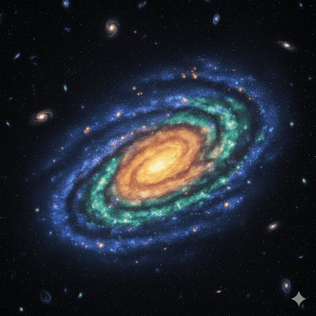

Humans
and AI
RL PROJECTS is an organization built to make software, experiments and games with people and AI working together. People decide what is worth making and how it should feel; AI helps us get there faster.

Founded by Renan Lucas